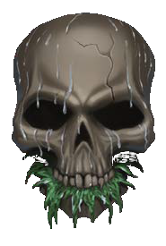
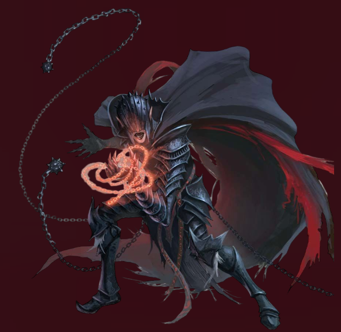
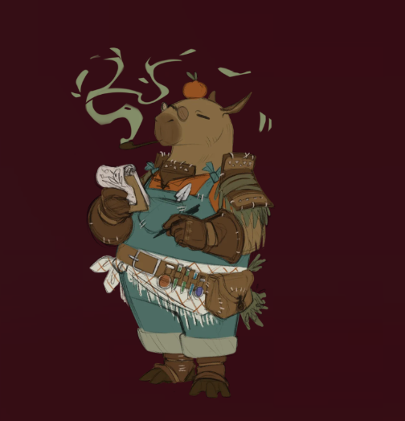
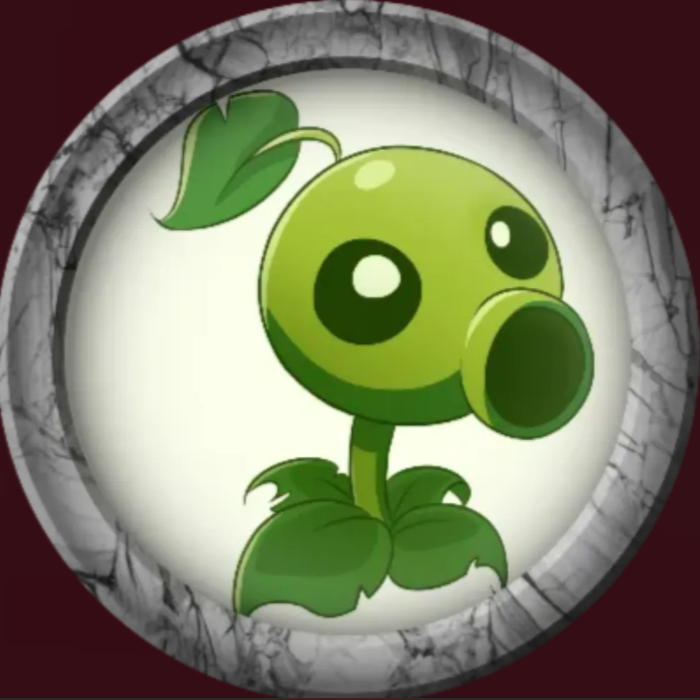
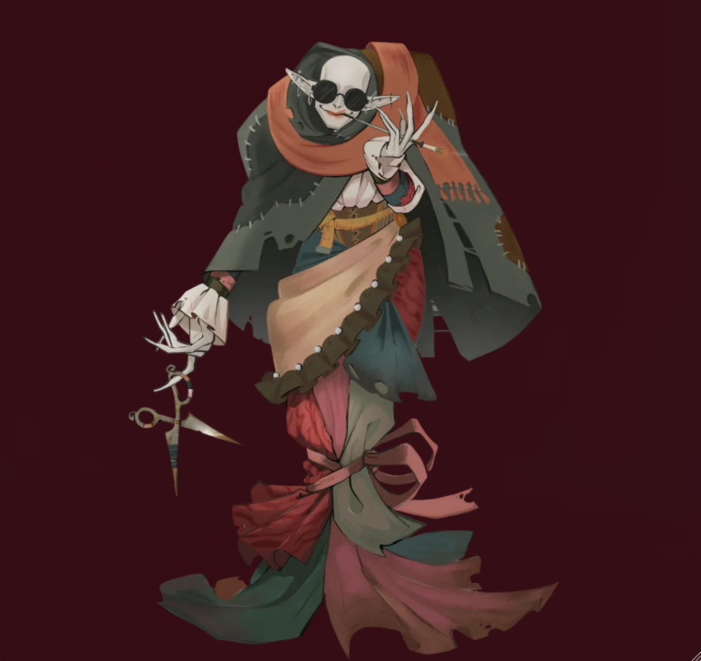

✧ Amaldiçoados ✧
Aqueles que carregam o peso dos pesadelos em suas mentes... E devem cumprir desafios se quiserem retornar sãos desta jornada.

Áhylla Cristal
Elfa Dhampira • Clériga

Capyrus
Humano Aiuvarin • Druida

Planta
Leshy Cabaça • Monge

Tiktik
Elfa Cambiante • Bárbara
✧ Pesadelos Recorrentes ✧
O cansaço da rotina como Desbravador da Alvorada finalmente cobra seu preço. O conforto
da sede da
guilda é a última coisa que você se lembra antes que o mundo físico se dissolvesse em um preto absoluto.
Mas o despertar não traz o descanso esperado.
Você abre os olhos sob um céu de cor púrpura doentia, onde estrelas desconhecidas e frias parecem
observar vocês como olhos distantes. O ar é rarefeito, seco e carrega um cheiro metálico. Você não está
mais em Solarion.
À frente, estende-se o Planalto de Leng.
Sob seus pés, a rocha negra é esculpida em ângulos que agridem a visão — geometrias que a mente humana
não foi feita para compreender. Ao longe, picos de montanhas impossivelmente altas rasgam o horizonte,
encimadas por monastérios de pedra onde luzes esverdeadas tremeluzem. O silêncio perpetua,
interrompido apenas pelo som de suas próprias respirações e movimentos... e por um
tilintar distante, como se correntes de metal fossem arrastadas sobre ossos secos.
Você sente um frio que arrepia tua pele, e parece tentar tocar tua alma. Em
Leng, a morte significa o esquecimento do espírito.
Bem-vindo ao lugar onde os pesadelos ganham forma.
⚔ AGENDA DAS SESSÕES ⚔
Dia da Semana
[A definir]
Horário
[A definir]
Plataforma
Foundry (do Mestre) / Discord
✧ Crônicas do Pesadelo ✧
Resumo das sessões já ocorridas.
[Em breve]
[Em breve]
[Em breve]
"A emoção mais antiga e mais forte da humanidade é o
medo..
E o mais antigo e mais forte de todos os medos é o medo do desconhecido."
— HP Lovecraft
✧ Devaneios (regra da casa) ✧
As regras a seguir estão vigentes para esta Aventura.
-
Corrupção dos Pesadelos
A exposição prolongada ao Plano dos Pesadelos causa efeitos perturbadores. Cada 01 natural rolado pelos aventureiros em testes válidos com o d20, será anotado pelo Mestre. Quando obtiverem uma certa quantidade, todos adquirirão um Flagelo. Um efeito negativo aleatório. O mestre pode optar por re–rolar 01 vez cada rolagem aleatória, porém sendo obrigado a aceitar o resultado da segunda rolagem.
-
Entre sessões
Os eventos e efeitos que acontecem nesta aventura, não continuam com o personagem fora da sessão, pois narrativamente a mesma se passa entre pesadelos dos aventureiros. Ou seja, teoricamente tudo não passa de sonhos. Horríveis, dolorosos e angustiantes. Mas sonhos.
-
Fluxo temporal Distorcido
Em combates ou outras cenas que exijam velocidade, cada jogador terá até 2 minutos para agir. Caso este tempo seja extendido, o turno do personagem é encerrado prematuramente.
-
Insanidade
Em Horizonte Partido a morte não é o maior perigo, mas sim sua consequência. Ser morto nos Planos dos Pesadelos, indica que sua mente não conseguiu processar tamanha informação aberrante e veio a enlouquecer. Um personagem que morrer nesta aventura, não morre no cenário Solarion, porém sofre uma penalidade marcante temporária. A penalidade em específico somente o Mestre e o Mestre ADM sabem, assim como sua duração.
-
Pessimismo Indescritível
Nenhum personagem recebe 1 Ponto de Heroísmo no início das sessões.
Para obtê-los, é preciso conquistá-los, seja por mérito interpretativo, ou através dos métodos citados no tópico "Pontos de Heroísmo" abaixo. -
Pontos de Heroísmo
De forma geral, o mestre é encarregado de premiar Pontos de Heroísmo, porém existem outros métodos de obtê-lo: Uma vez por rodada, você pode optar por sofrer um revés narrativo para ganhar 1 ponto de heroísmo.
Exemplos:
✕Após rolar um dado, você opta por diminuir o grau de sucesso em um nível.
✕Você opta por aumentar o grau de sucesso de um inimigo que acabou de te atacar ou afetar.
✕Além disso, o Mestre pode te impor uma condição de acordo com a narrativa, te fornecendo um Ponto de Heroísmono processo.
Obs: O mestre tem a palavra final sobre a troca.
✧ Bastidores ✧
Mestre Weber (Narrador)
–Estou ansioso para narrar esta aventura.
Será diferente de tudo que já narrei, vamos ver quantos aguentam até o fim.
Mestre Epitácio (MESTRE ADM, criador e dono do Cenário)
–((Alguma frase do Epitácio sobre o que ele espera pra isso aqui.))